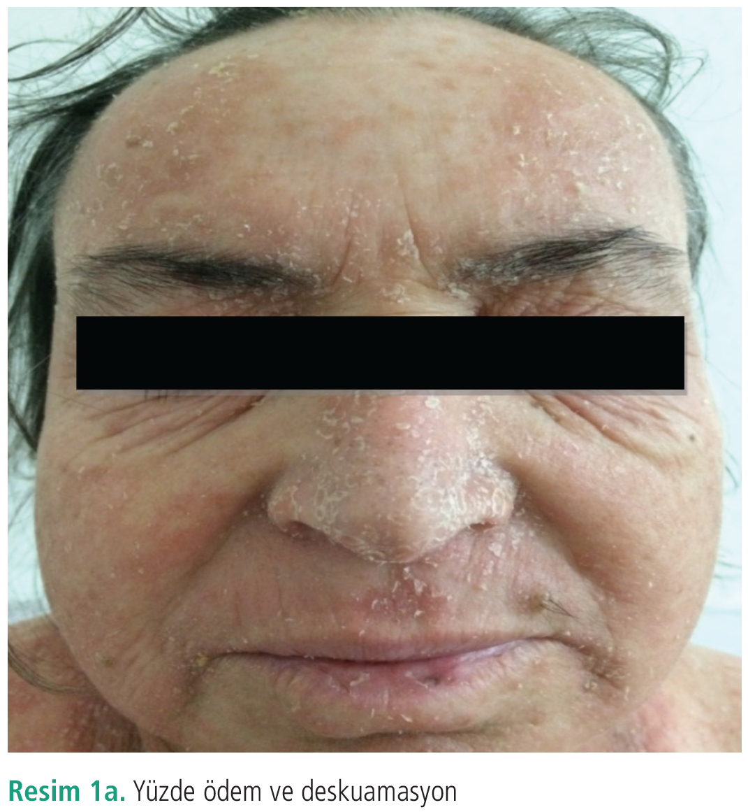
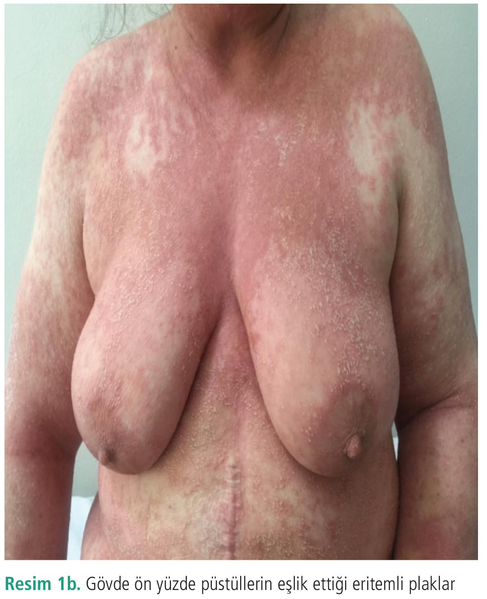
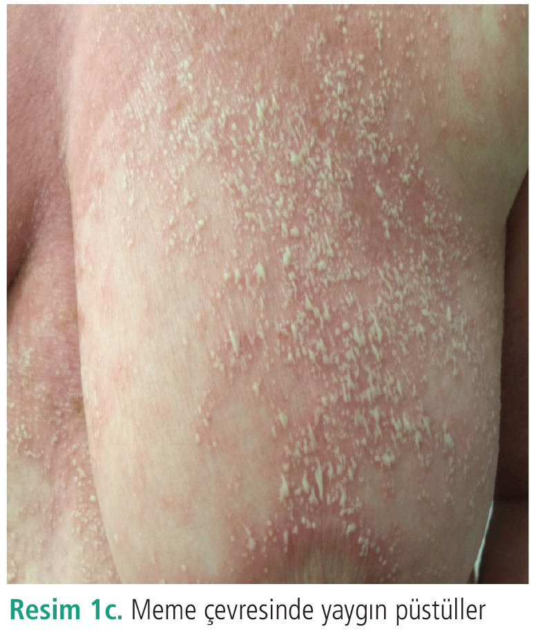
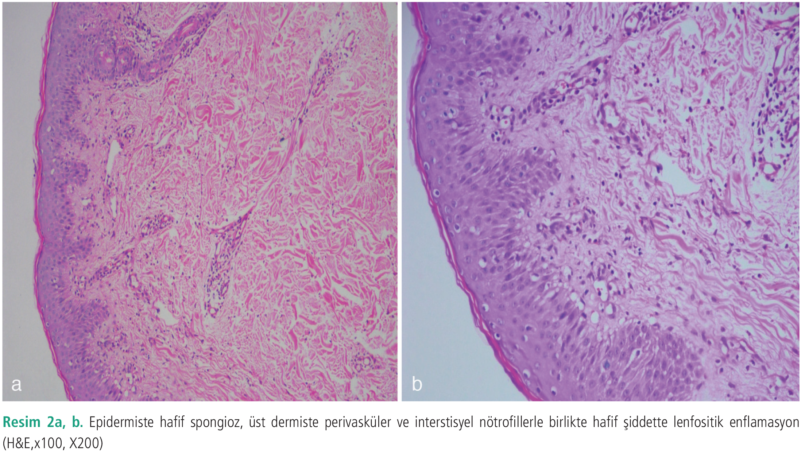
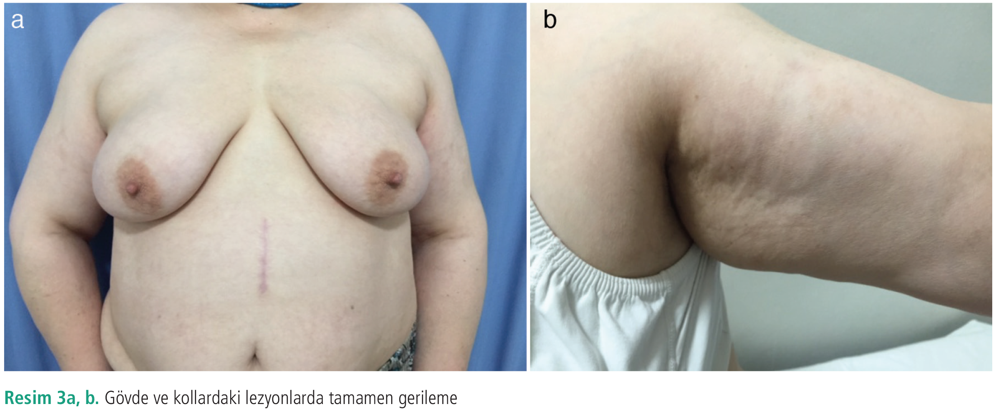

Olgu Sunumu
Hidroksiklorokin Kullanımı Sonrası Gelişen Steroide Dirençli Akut Jeneralize Ekzantematöz Püstülozda Siklosporin Kullanımı
1 Sağlık Bilimleri Üniversitesi, Dışkapı Yıldırım Beyazıt Eğitim ve Araştırma Hastanesi, Deri ve Zührevi Hastalıklar Kliniği, Ankara, Türkiye
2 Sağlık Bilimleri Üniversitesi, Dışkapı Yıldırım Beyazıt Eğitim ve Araştırma Hastanesi, Patoloji Kliniği, Ankara, Türkiye
Anahtar Kelimeler: AGEPhidroksiklorokinsiklosporin
Keywords: AGEPhydroxychloroquinecyclosporine
Geliş: 14.03.2019Kabul: 02.07.2019Yayın: 07.10.2020
s. 115-119
Özet
ÖZET
Akut jeneralize ekzantematöz püstüloz (AGEP), genelde ilaç kullanımıyla tetiklenen eritemli zeminde akut non-foliküler steril püstüllerle karekterize bir hastalıktır. Genelde beta-laktamlar, makrolidler kalsiyum kanal blokörleri gibi ilaçlara bağlı görülür. Çoğu hastada spontan remisyon gösterir. Hidroksiklorokin, AGEP’ye yol açan nadir bir ilaçtır ve anti-enflamatuvar ve immünsüpresif etkileri nedeniyle, bazı dermatolojik ve romatolojik hastalıklarda kullanılmaktadır. Elli üç yaşında kadın hastamızda, romatoid artrit tedavisinde kullanılan hidroksiklorokin sonrası AGEP gelişmiş ve hasta steroid tedavisine direnç göstererek şikayetlerinde artış olmuştur. Bunun üzerine siklosporin başlanan hastanın tedaviyle şikayetleri tamamen gerilemiştir.
Tam Metin
Giriş
Akut jeneralize ekzantematöz püstüloz (AGEP), %90 oranında ilaç kullanımı sonrası gelişen yaygın kutanöz bir reaksiyondur. AGEP’de aminopenisilin ve makrolid grubu başta olmak üzere, sülfonamid grubu ilaçlar, terbinafin, kalsiyum kanal blokörleri ve antimalaryal ilaçlar sıklıkla sorumlu tutulmaktadır (1). Hidroksiklorokin (HCQ) anti enflamatuvar ve immünsüpresif etkileri nedeniyle özellikle romatolojik hastalıklarda kullanılmaktadır ve AGEP’ye yol açan nadir ilaçlardan biridir (2). Kadınlarda daha sık görülür (3). EuroSCAR çalışmasına göre latent periyod kısa (1-5 gün) olup kullanılan ilaçlara göre süre değişmektedir. Antibiyotikler için ortalama bir gün iken, diğer ilaçlarda 11 gündür (4).
AGEP kliniğinde, deride eritemli ve ödematöz zeminde küçük, çok sayıda non-foliküler steril püstüller görülür. Bu tabloya ateş (38 °C<), nötrofil hakimiyetinin olduğu lökositoz (7,5x109/L) eşlik eder. En sık tutulan bölge intertriginöz alanlardır (1). Mukoza tutulumu nadir olup daha çok dudaklar ve bukkal mukoza tutulur (2). İyileşme döneminde etkilenen alanlarda deskuamasyon görülür. Reaksiyona neden olan ajan kesildiğinde 15 gün içerisinde spontan olarak geriler. Burada HCQ nedeniyle AGEP gelişen ve steroid tedavisine direnç gösteren hastamızı, literatürde birkaç adet benzer olguda başarılı sonuçları bildirilmiş olan siklosporin ile başarılı bir şekilde tedavi ettik (5).
Olgu Sunumu
Elli üç yaşında kadın hasta, 1 haftadır gövdede daha yoğun olmak üzere vücudunda kırmızı, iltihaplı döküntüleriyle kliniğimize başvurdu. Hastanın anamnezinde romatoid artrit nedeniyle, 1 aydır 100 mg/gün HCQ tedavisi aldığı öğrenildi. Hastanın ailesinde psoriasis öyküsü yoktu. Dermatolojik muayenesinde yüzde ödem (Resim 1a), kollarında, göğüs ve sırt bölgesinde püstüllerin eşlik ettiği eritemli plaklar (Resim 1b, c) görüldü. Oral ve genital mukoza tutulumu yoktu. Hastanın vücut sıcaklığı 38 °C idi. Laboratuvar sonuçlarında beyaz küre 14.800/mL, nötrofil baskın (%86), C-reaktif protein 86 mg/L olup diğer parametreler normaldi. Hastanın gövdesindeki püstüllerden alınan kültür negatifti.
Biyopsisinde ise fokal parakeratotik odaklar genelde ortokeratoz içeren düzensiz stratum corneum, epidermiste hafif spongioz, üst dermiste perivasküler ve interstisyel nötrofillerle birlikte hafif şiddette lenfositer enflamasyon görüldü (Resim 2a, b).
Hastada klinik ve histopatolojik olarak AGEP düşüldü ve sebep olduğu düşünülen HCQ kesildi. Hastaya 0,6 mg/kg/gün oral steroid ve antihistaminik tedavi başlandı. Hastanın 8 gün boyunca 60 mg/gün dozunda steroid kullanmasına rağmen püstüllerinde ve eriteminde artış olmasından dolayı steroid dozu 1 mg/kg/güne çıkarıldı. Hasta son 7 gün boyunca 80 mg/gün şeklinde, totalde 15 gün steroid tedavisi almasına rağmen, hastada püstül gelişimi devam etmekte ve yüz ödemi artmaktaydı. Bunun üzerine hastaya siklosporin tedavisi planlandı. Hastanın tedavi öncesi bakılan kan parametreleri (kolesterol ve elektrolitleri) normaldi. Hastaya 2,5 mg/kg, 200 mg/gün siklosporin başlandı. Siklosporin tedavisinin 2. gününde, hastada ilaç tedavisiyle kontrol altına alınabilen tansiyon yüksekliği gelişti. Hastanın, siklosporin kullanımının 3. gününden itibaren püstüllerinde ve eriteminde azalma, lezyon yerlerinde deskuamasyon görüldü. Hastanın şikayetleri gerilediği için steroid dozu kademeli olarak azaltıldı ve kesildi. Tedavi kesildikten 1 ay sonra hastanın takibinde yeni lezyon görülmedi (Resim 3a, b). Hastanın olgu sunumu için onamı alınmıştır.
Tartışma
AGEP ilk olarak püstüler psoriasisin bir formu olarak tanımlanmıştır. Daha sonra 1968’de Baker ve Ryan (6) 104 tane püstüler psoriasis olgusundan beşinde, daha önce psoriasis öyküsü olmadığını, püstüler erüpsiyonların ani oluşup kısa sürdüğünü ve tekrarlamadığını gözlemlemişlerdir. 1980’de ise Beylot bu tabloyu AGEP olarak tanımlamıştır (7).
AGEP genellikle ilaçlar ve daha az sıklıkta enfeksiyonlarla tetiklenir. Ani başlayan eritemli ve ödemli zeminde non-foliküler püstüllerin eşlik ettiği, ateş (38<) ve lökositoz ile karakterize olup, genelde 15 gün içerisinde gerileyen bir deri reaksiyonudur (8). AGEP görülme sıklığı her yıl milyonda 1-5 olgudur (1,8,9). 2001’de Sidoroff ve ark. (8) tarafından tanımlanan AGEP kriterleri; akut başlangıç (<10 gün), hızlı rezolüsyon (<15 gün), tipik non-foliküler püstüller, eritem, postpüstüler deskuamasyon, 38 °C’nin üzerinde ateş, polimorfonükleer lenfositlerin 7.000/mm3< olması gibi morfolojik kriterlere ek histolojik olarak epidermiste spongioz ve intraepidermal püstüllerin gösterilmesidir. Skorlamada 1-4 puan şüpheli, 5-7 yüksek olasılıkla, 8-12 puan ise kesin olarak AGEP tanısı koydurmaktadır.
Hastamıza şüpheli ilaç kullanım, ani başlayan püstüller, yüksek ateş, nötrofili ve histopatolojik bulgular neticesinde AGEP tanısı konulmuştur. AGEP etiyolojisinde çoğunlukla ilaçlar sorumludur (10). EuroSCAR çalışmasına göre, 6 ülkede, 100 milyon kişide, 4 yıl içerisinde 97 tane AGEP olgusu rapor edilmiştir. Bu olguların yalnızca 7’si HCQ’ya bağlı gelişmiştir (11). HCQ ile indüklenen AGEP’de hastalığın ortaya çıkma periyodu diğer ilaçlara göre çok daha uzun sürmektedir. Antibiyotik kullanımından 48 saat sonra gelişirken, HCQ’da 12-30 güne kadar uzayabilir. Bu HCQ’nun metabolik özelliklerine veya eş zamanlı bulunan bir romatolojik hastalığa bağlı immün disregülasyon nedeniyle olabilir. Ayrıca ilacın kesilmesinden sonra AGEP genelde 15 gün içinde gerilerken, HCQ kullanımı sonrasında sistemik tedaviye direnç geliştiği ve yanıtın geç olduğu görülmüştür (11). Bu HCQ’nun yarılanma süresinin 40-50 gün olmasıyla açıklanabilir.
Histolojik olarak, subkorneal veya süperfisiyal intraepidermal püstüller ve püstül kenarlarında hafif spongiform değişiklikler görülür. Papiller dermis genelde ödemli olup üst dermişte perivasküler nötrofil veya eozinofil infiltratları ve epidermiste nekrotik keratinositler görülür (12).
Ayırıcı tanıda; jeneralize püstüler psoriasis, subkorneal püstüler dermatozis, IgA pemfigus, lokalize püstüler kontakt dermatit, Eozinofili ve Sistemik Semptomların Eşlik Ettiği İlaç Döküntüsü sendromu ve toksik epidermal nekroliz gibi hastalıklar yer alır (8,13). Jeneralize püstüler psoriasis ve AGEP ayrımı zor olsa da histopatolojik ve klinik özellikler yol gösterici olabilir. Hastada ilaç kullanım öyküsü olması, öncesinde benzer bir dermatolojik hastalığı olmaması, psoriasisi düşündürecek ek bulgu (tırnak tutulumu vs.) olmaması ve histopatolojik incelemede papiller dermiste yaygın ödem, vaskülit, perivasküler eozinofil infiltrasyonu ve fokal keratinosit nekrozu AGEP’yi destekler (8,14).
AGEP tedavisinde sistemik steroidler primer tedavi olup, steroide cevap vermeyen olgularda siklosporinle de yüz güldürücü sonuçlar alınmaktadır. Castner ve ark. (15), konnektif doku hastalığı olan kadın hastalarında, HCQ kullanımı sonrası AGEP gelişme latent periyodunu, tedavide verilen steroid dozu, tedavi süresive tedaviye alınan cevapları, 2009’daki Di Lernia ve ark.’nın (5), 2015’te ise Yalçın ve ark.’nın (2) sunduğu olgularla karşılaştırmış. En kısa latent periyod 15 gün ile Yalçın ve ark.’nın (2) olgusu olup, hastaya 1 mg/kg/gün prednizolon başlanmış. Yirmi iki gün sonra cevap alınmaması üzerine 4 mg/kg/gün siklosporin başlanmış ve 5 gün içinde klinik iyileşme görülmüş. Di Lernia ve ark.’nın (5) çalışmasında latent periyod 30 gün olup, hastaya 40 mg/gün metilprednizolon başlanmış. Yirmi beş gün boyunca ilerleme görülmemesi üzerine 5 mg/kg/gün siklosporin başlanıp, 5 gün içinde tabloda iyileşme görülmüş. Castner ve ark.’nın (15) çalışmasında ise 21 günlük latent periyod sonrası AGEP gelişmiş. Hastaya prednizon 2 mg/kg/gün başlanmış ve 7 gün boyunca tedaviye cevap alınmaması üzerine 4,5 mg/kg/gün siklosporin başlanmış, 2 gün içerisinde klinik yanıt alınmış. Bizim çalışmamızda latent periyod yaklaşık 60 gün olup, hastaya prednizolon 0,6 mg/gün başlanıp 1 hafta sonra 1 mg/kg/güne çıkıldı. On beş gün boyunca tedaviye yanıt alınamadığından 2,5 mg/kg/gün siklosporin başlandı ve 3 gün içerisinde klinik yanıt alındı.
Sonuç
HCQ’ya bağlı AGEP nadir de olsa gelişebilir ve genelde latent periyodu uzun olup steroid tedavisine direnç gösterebilir. Literatürde bu tip olgularda, siklosporinle yüz güldürücü sonuçlar alınmıştır (2,5,15). Biz de makalemizde steroid tedavisine dirençli AGEP geliştiğinde, siklosporinin de seçenek olarak akılda tutulabileceğini tekrar vurgulamak istedik.





Kaynaklar
1.Fernando SL. Acute generalised exanthematous pustulosis. Australas J Dermatol 2011; 53: 87-92.
2.Yalçın B, Çakmak S, Yıldırım B. Successful treatment of hydroxychloroquine1-ınduced recalcitrant acute generalized exanthematous pustulosiswith cyclosporine: case report and literature review. Ann Dermatol 2015; 27: 431-434.
3.Tamir E, Wohl Y, Mashiah J, et al. Acute generalized exanthematous pustulosis: a retrospectiveanalysisshowing a clear predilection for women. Skinmed 2006; 5: 186-188.
4.Davidovici B, Dodiuk-Gad R, Rozenman D, et al. Profile of acute generalized exanthematous pustulos is in Israelduring 2002-2005: results of the RegiSCAR Study. Isr Med Assoc J 2008; 10: 410-412.
5.Di Lernia V, Grenzi L, Guareschi E, et al. Rapidclearing of acute generalized exanthematous pustulos is after administration of ciclosporin. Clinical and Experimental Dermatology 2009; 34: e757-e759. doi: 10.1111/j.1365-2230.2009.03480.x
6.Baker H, Ryan TJ. Generalized pustular psoriasis. A clinical and epidemiological study of 104 cases. Br J Dermatol 1968; 80: 771-793.
7.Beylot C, Bioulac P, Doutre MS. Acute generalized exanthematic pustuloses (fourcases) Ann Dermatol Venereol 1980; 107: 37-48.
8.Sidoroff A, Halevy S, Bavinck JNB, et al. Acute generalized exanthematous pustolosis: a clinical reaction pattern. J Cutan Pathol 2001; 28: 113-119.
9.Bailey K, Mckee D, Wisme J, et al. Acute generalized exanthematous pustulosis ınducedby hydroxychloroquine: first case report in canada and review of the literature. Journal of Cutaneous Medicine and Surgery 2013; 17: 414-418.
10.Gebhardt M, Lustig A, Bocker T, et al. Acute generalized exanthematous pustulosis (AGEP): manifestation of drugallergytopropicillin. Contact Dermatitis 1995; 33: 204-205.
11.Sidoroff A, Dunant A, Viboud C, et al. Risk factors for acute generalized exanthematous pustulosis (AGEP)-results of a multinationalcase-controlstudy (EuroSCAR) Br J Dermatol 2007; 157: 989-996.
12.Burrows NP, Jones RR. Pustular drugeruptions: a histopathological spectrum. Histopathology. 1993; 22: 569-573.
13.Paradisi A, Bugatti L, Sisto T, et al. Acute generalized exanthematous pustulosis induced by hydroxychloroquine: three cases and a review of the literature. ClinTher 2008; 30: 930-940.
14.Auer-Grumbach P, Pfaffenthaler E, Soykr HP. Pustulosis acuta generalisata is a post-streptococcal disease and is distinct from acute generalized exanthematous pustulosis. Br J Dermatol 1995; 133: 135-139.
15.Castner NB, Harris JC, Motaparthi K. Cyclosporine for corticosteroid-refractory acute generalized exanthematous pustulosis due to hydroxychloroquine. Dermatol Ther 2018; 31: e12660. doi: 10.1111/dth.12660